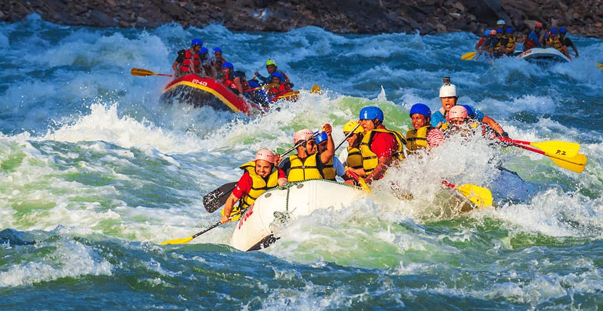

Nossa missão é proporcionar aventuras emocionantes e seguras, conectando pessoas à natureza e criando experiências inesquecíveis nas águas do rio.


Nossa missão é proporcionar aventuras emocionantes e seguras, conectando pessoas à natureza e criando experiências inesquecíveis nas águas do rio.
Nossa empresa começou com o sonho de reunir pessoas que amam aventura e natureza.

Desde então, criamos experiências de rafting para famílias, amigos e grupos que desejam conhecer o rio de uma maneira diferente.